Banksy VS Robbo
Para entender mejor lo sucedido primero debemos saber quién es quién en el mundo del arte
urbano,
específicamente del spray. Robbo, como bien recordaremos es uno de los graffiteros más conocidos
a
nivel mundial, ya que sus intervenciones y obras son muy famosas. Por otro lado, tenemos a
Bansky,
una de las figuras más importantes del underground londinense. Un personaje muy respetado dentro
del mundo del street art por lo que en años, nadie se había atrevido a tapar alguna de sus
obras.
En 1990 en una fiesta, a Robbo le presentan a Banksy. Lo cual Robbo lo saluda y le comenta ‘Sí,
he
oído hablar de ti’ pero Bansky al saludarlo le pregunta por su tag (seudonimo con el que
grafitea el
artista) y cuando Robbo se lo dijo, Banksy solo dijo: "nunca he oído hablar de ti".
Robbo le contesta consecutivamente a un golpe en el hombro "Puede que nunca hayas oído hablar de
mi,
pero a partir de ahora no se te va a olvidar"
Parte del código no escrito del street art, dicta que una de las ofensas más grandes es
desconocer a
un grafitero. Sin embargo, un gesto mucho peor es pisar (tapar una obra con otra encima) lo cual
puede
significar graves problemas.
La rivalidad comienza
Robbo un graffitero veterano de la vieja escuela y pionero en Londres, por obvias razones le
ofendió el
despreci de Banksy y el artista urbano, se molestó por la reacción soberbia y violenta del
grafitero.
Esto causó gran tensión desembocando en una guerra claramente iniciada por Bansky.
En 1985, el grafitero King Robbo pintó una de las primeras piezas de Londres en un conocido
túnel de Camden.
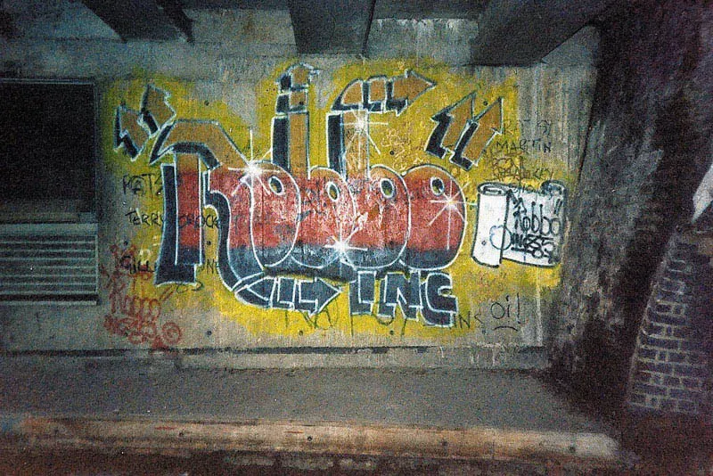
En 2009 Bansky sabiendo lo legendario que era el mural de Robbo bajo Regent’s Canal en Camden
Town lo cual
tenia 24 años de antiguedad con un stencil de un trabajador empapelando el graffiti.
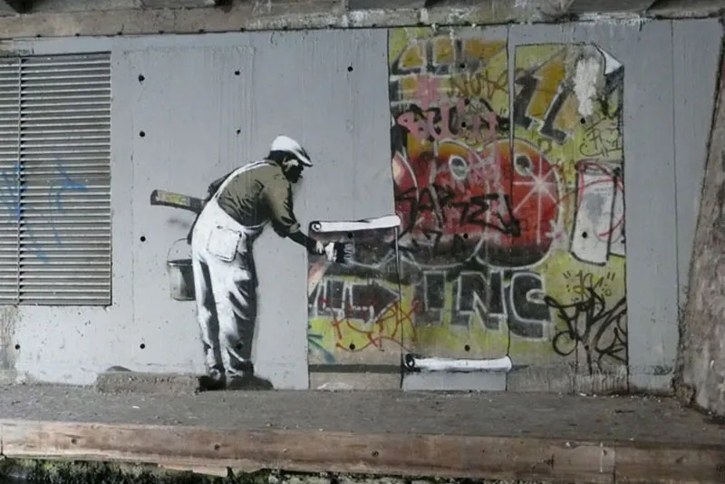
La respuesta de Robbo fue inmediata, la noche del 24 de diciembre esta misma pieza apareció
intervenida
una vez mas, por el mismísimo autor. Con un contundente mensaje entre líneas:
“tú usas mi pieza de fondo, yo uso la tuya”.
Ahora, la plantilla de Banksy ya no parecía estar borrando el nombre de Robbo, sino pintando la
frase
King Robbo. Choci-Roc, uno de los mejores amigos de Robbo y compañero de pintas, se encargó de
difundir
dicha fotografía.
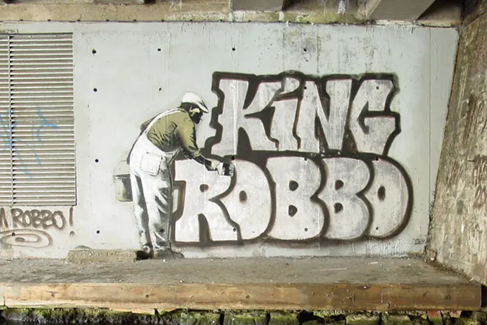
Banksy no tardó en responder, únicamente añadió la palabra -Fuc- con el mismo estilo y pintura
para
completar un: "Fucking Robbo".
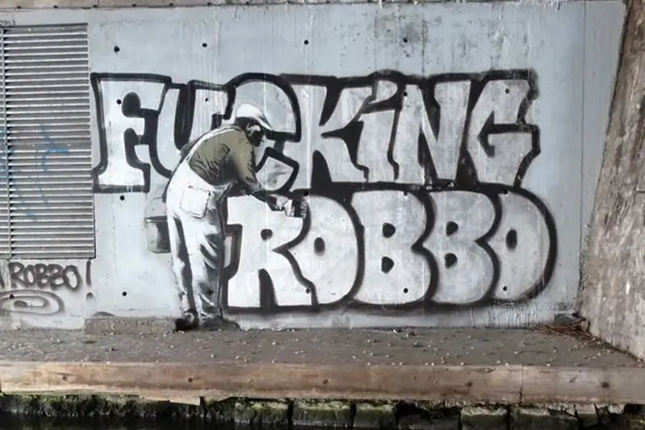
La respuesta de este no tardo en llegar pero sutilmente solo borra el -fuc- para que vuelva ser
la obra
original.
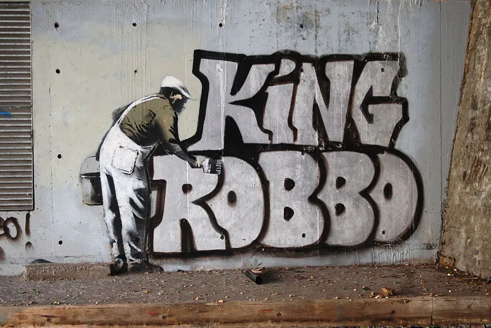
El gobierno pintó de negro toda la pared.
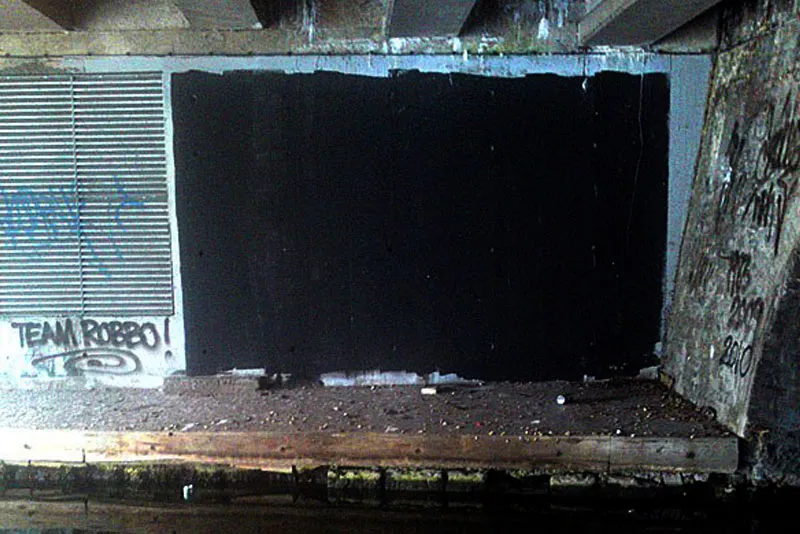
En julio de 2010 Robbo contestó a Banksy con un sonriente Don Gato apoyado sobre una lápida con
la siguiente
leyenda: «"RIP Banksy’s carrer" (descanse en paz la carrera de Banksy).
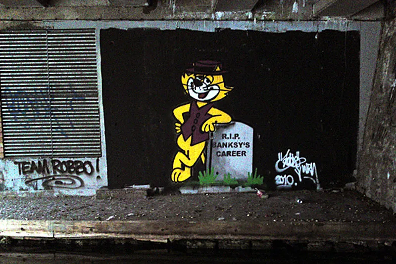
Una vez más la pared fue pintada de negro.
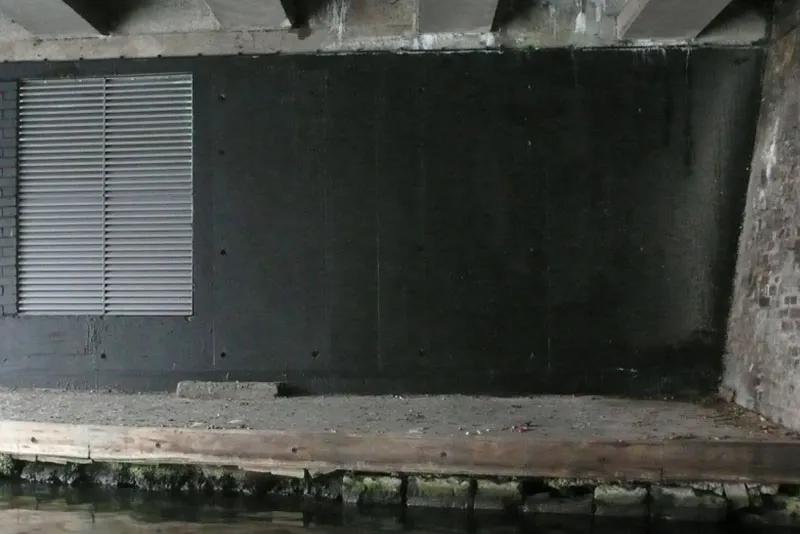
Para enero de 2011 Banksy hizo una intervención a mano alzada. Era una sala de estar con dos
peces naranjas
(goldfish), uno de ellos fuera de la pecera.
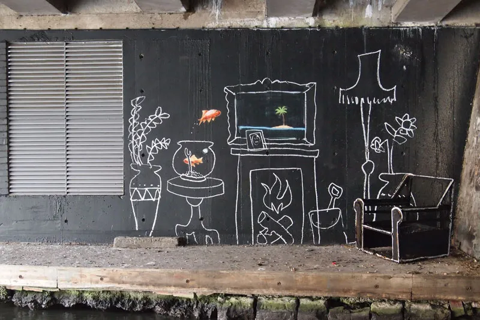
La guerra de los sprays fue muy famosa en el mundo teniendo repercusiones en el mundo del street
art.
Hubo división entre grafiteros, quienes se lo tomaron como una guerra de estilos: entre el arte
urbano
y el graffiti.
En 2011 King Robbo fue hospitalizado 5 días antes de su exposición en la Signal Gallery
«Equipo Robbo – La Sell Out Tour.» Debido a serias lesiones en la cabeza cuando accidentalmente
cayó de
las escaleras. Al enterarse de la noticia Bansky publicó un mensaje:
"Me gustaría que Robbo tuviera una recuperación completa y rápida".
Para noviembre de 2011 el polémico muro amaneció con una réplica en blanco y negro de la firma
inicial
de 1985, una corona y un spray en forma de vela en memoria del artista.
Aunque no se había confirmado al 100% que Banksy era autor de dicho homenaje. El estilo de la
obra apuntan
a que él mismo decidió dar fin a la guerra de esa manera.
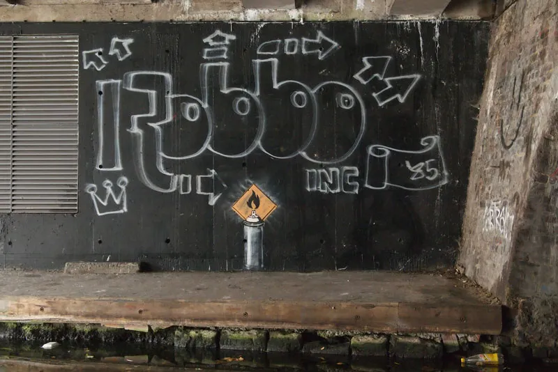
Más tarde, el mural fue restaurado a su forma original, con ligeros cambios, por los otros
miembros del
Team Robbo. La recuperación de Robbo fue muy lenta, permaneció en coma durante 3 años, teniendo
un trágico
final.
El mundo del graffiti dijo adiós al rey el 31 de julio de 2014.
El Equipo Robbo aparece de repente y la guerra para desfigurar las piezas de Banksy comienza..
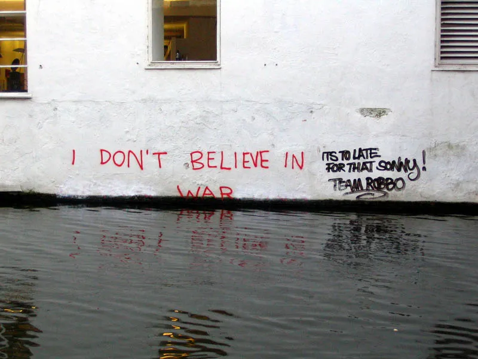
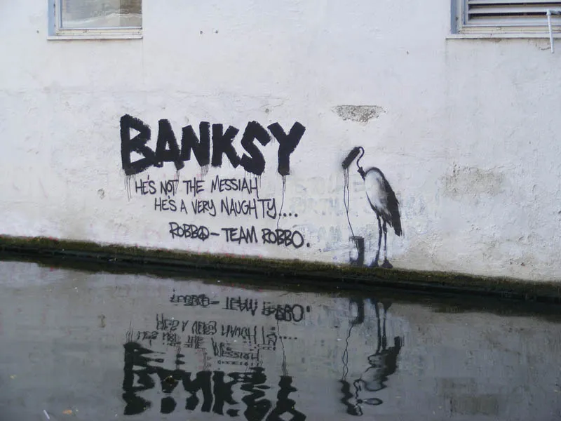
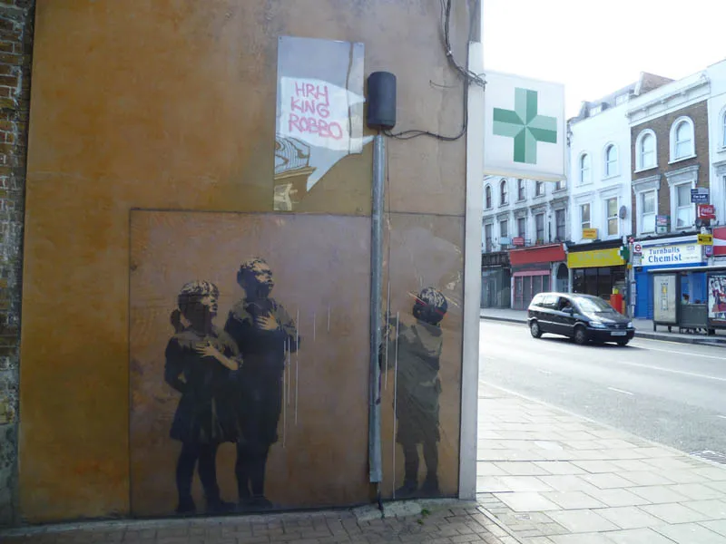
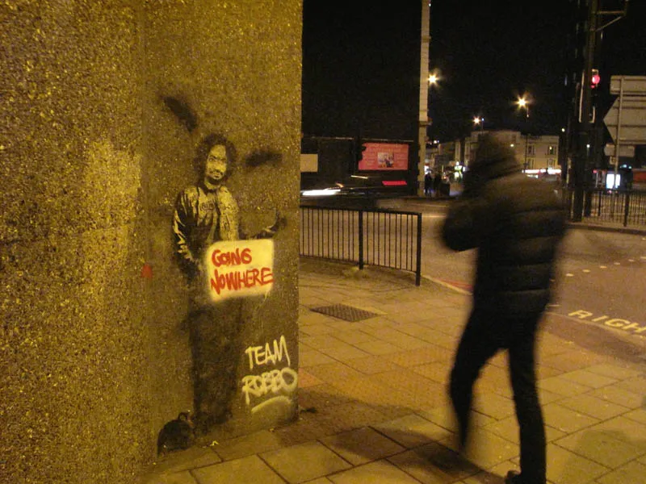


La rivalidad entre Banksy y Robbo no solo fue un enfrentamiento personal, sino que
también
destacó las
diferencias filosóficas y estilísticas entre el graffiti y el arte callejero. Esta
disputa
atrajo una
atención significativa hacia el arte urbano y generó debates sobre la autenticidad,
el respeto y
la
evolución del arte en espacios públicos.
La rivalidad entre Banksy y Robbo no solo fue un enfrentamiento personal, sino que también destacó las diferencias filosóficas y estilísticas entre el graffiti y el arte callejero. Esta disputa atrajo una atención significativa hacia el arte urbano y generó debates sobre la autenticidad, el respeto y la evolución del arte en espacios públicos.